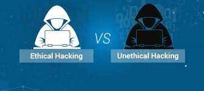

hacken op slechte manieren gebruikt
Er bestaan diverse vormen van computercriminaliteit, waaronder diefstal, fraude, afpersing en inbraak, die gespecialiseerde beveiligingsbedrijven bestrijden. Preventieve maatregelen kunnen veel problemen voorkomen, maar bij computercriminaliteit is het raadzaam aangifte te doen bij de politie vanwege mogelijke ernstige gevolgen. Data kan op verschillende manieren worden gestolen, bijvoorbeeld door hacking of het verkrijgen van toegang tot een database. Deze gestolen data kan worden doorverkocht of misbruikt voor identiteitsfraude. Afpersing kan optreden wanneer criminelen dreigen de data openbaar te maken. Fraude, gericht op financieel gewin, kan zich voordoen via phishing, spyware, online winkels, sociale media of online dating. Slachtoffers betalen vaak voor een product dat nooit aankomt of geven geld aan iemand die zich online anders voordoet, zoals bijvoorbeeld bij nep-vliegreizen. Malware, zoals ransomware, kan worden ingezet voor afpersing. Criminelen dreigen gevoelige gegevens openbaar te maken of compromitterende foto's te delen. Ze kunnen ook gestolen gegevens gebruiken om te beweren dat ze toegang hebben tot je webcam en bestanden, en dreigen deze te delen tenzij er wordt betaald. Dit is meestal een intimidatietactiek. Hacken, of computervredebreuk, vormt een ernstige bedreiging voor cybersecurity en omvat ongeoorloofd binnendringen in een computersysteem of netwerk. Pogingen tot hacken, zelfs mislukte, zijn strafbaar. Het melden van beveiligingslekken wordt aangemoedigd. Het inbreken in een computer is al computervredebreuk, en als er na de inbraak gegevens worden gemanipuleerd of schade wordt aangericht, wordt dit beschouwd als een extra strafbaar feit. Het is essentieel om zich bewust te zijn van de ernst van dergelijke acties.hacken goede manieren gebruikt
Hoewel hacken vaak wordt geassocieerd met criminaliteit, zijn er ethische hackers die bijdragen aan een veiliger internet. Ze melden beveiligingslekken aan bedrijven, die vervolgens de kans krijgen om het lek te dichten. Bij 'responsible disclosure' maken hackers het lek openbaar na een bepaalde periode als het bedrijf niet snel genoeg handelt. Ethische hackers overtreden technisch gezien de wet, maar worden doorgaans niet vervolgd omdat ze de internetveiligheid bevorderen. Publicatie van informatie over beveiligingsproblemen valt onder persvrijheid, maar er zijn regels: hacken is alleen toegestaan om ernstige misstanden aan te tonen en mag niet leiden tot onnodige diefstal van gegevens of hacking van computers. Zero days, onontdekte kwetsbaarheden, zijn waardevolle hulpmiddelen voor hacking en worden verhandeld voor hoge prijzen. Ze worden gezien als digitale oorlogswapens waarmee aanvallen kunnen worden uitgevoerd, gegevens gestolen en systemen platgelegd. Zowel criminelen als beveiligingsbedrijven zijn geïnteresseerd in zero days, de laatsten om lekken te dichten en klanten te beschermen. Overheden gebruiken zero days voor spionage en om vijandige systemen te verstoren. Hoewel het melden van kwetsbaarheden deze zou kunnen oplossen, kan het gebruik van zero days de internetveiligheid verminderen. Het gebruik van zero days door de Nederlandse overheid is alleen toegestaan onder strikte voorwaarden.